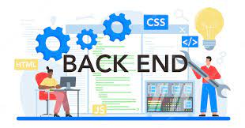

Welcome to Backend developer Roadmap
Backend development is the behind-the-scenes process that powers websites, web applications, and other software systems. It focuses on server-side logic, databases, APIs (Application Programming Interfaces), and managing the data and functionality that support the frontend user interface. In essence, backend development makes sure that the frontend and the entire application work seamlessly together. Here's a closer look at the key aspects of backend development:

(Click Image)